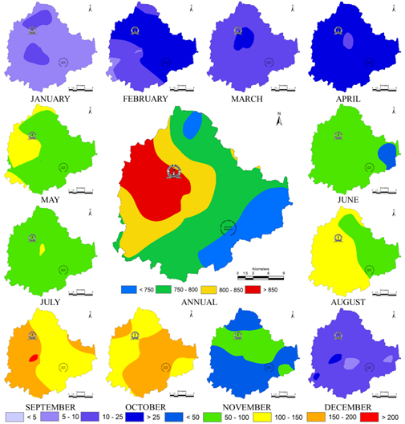
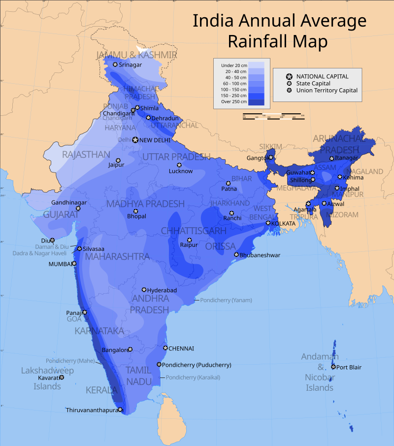
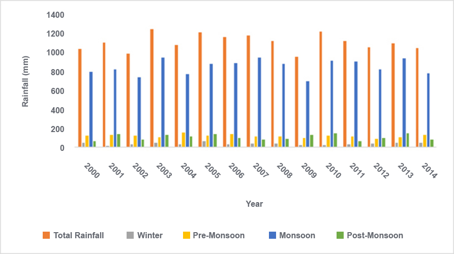

Analysis of rainfall indicates that the western portion of Bengaluru receives higher raindfall than the east.Monthly analysis of rainfall below indicates that rainfall is spread across all months and 89% of rainfall occurs between the months of May to November,September being the highest.

India experiences an average precipitation of 1,170 millimetres (46 in) per year, or about 4,000 cubic kilometres (960 cu mi) of rains annually or about 1,720 cubic metres (61,000 cu ft) of fresh water per person every year.Some 80 percent of its area experiences rains of 750 millimetres (30 in) or more a year

Monsoon precipitation has been the lifeline of India with respect to agriculture as well as recharging its water resources. India receives about 4000 bcm of average annual precipitation along with snowfall, of which 3000 bcm is received in the monsoon season (June-September). The spatial distribution of precipitation widely varies over the country (<100 mm in Rajasthann to >2500mm in Assam)(Central Ground Water Board 2014). Less than 50% of total precipitation flows to the rivers and it is estimated as 1869 bcm. However, only 690 bcm surface water resources can actually be utilised(Central Water Commission 2015).
